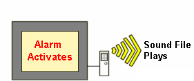

|
|
|
|
|
|
|
|
You can signal alarms to panel operators by setting up the target machine to emit a sound. This section describes how to set up sound. For more information on sound file selection, see Section 24.2.1, Working With the Sound File Editor.


Not all target machines support the sound feature. See Appendix 5, Hardware Specifications, to see if your target machine supports sound.
You need to connect speakers
to the target machine in order to use the sound feature. Information
on connecting speakers is found in your target machine's hardware
manual in Appendix 1, Hardware
User Manuals.
For example, information on connecting speakers for HMIG3U can be found
in the HMIGTU Series
User Manual, under Auxiliary Output/Speaker Output Interface (AUX)
in section 4.3.

For target machines that do not support sound files, you can use the Sys.beep method to alert panel operators. For more information, see Section 24.3.4, Emitting Beeps Using Scripts.
In the Variable Editor, double-click a variable's row number to display the Variable Properties dialog box.
Select the Alarm tab, and select the Alarm check box.
Select the Sound check box.
Click the Configuration button to display the Function Setting dialog box. Select the sound file to play from the sound file drop-down list.
In the Play Mode area, select Play Once or Repeat.
Play Once
The sound file plays only once when the alarm becomes active.
Repeat
The sound file repeats until the alarm goes to RTN state.